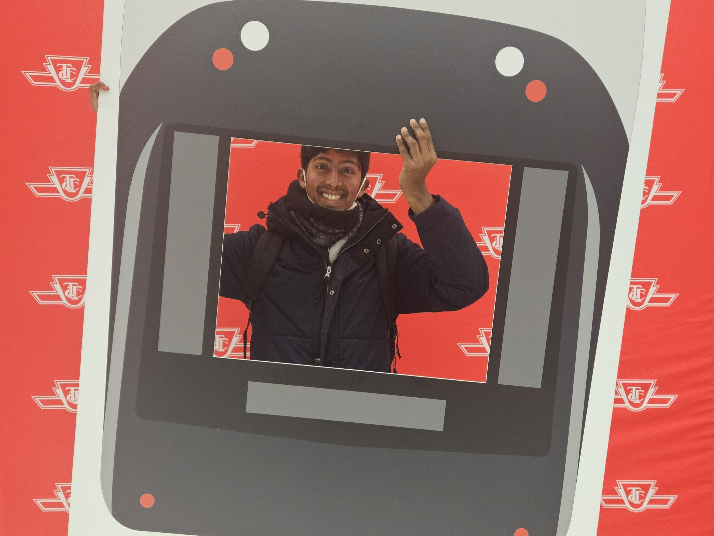

In Transit is a documentary film exploring the hidden complexity of urban transportation networks, with a focus on Toronto. The film examines how traffic and transit systems behave in ways that are counterintuitive to both policymakers and the public, and makes the case for evidence-based approaches to transportation planning and infrastructure investment.

Behind the scenes at the TTC
Development Status
This documentary is currently in active development. Here's where we are in the process:
Research & Concept Development
Drawing on simulation and modelling work from my master's thesis research on urban mobility.
Pre-Production
Developing the narrative structure, identifying interview subjects, and scouting locations across Toronto.
Principal Photography
Capturing footage of Toronto's transit infrastructure, commuter experiences, and expert interviews.
Post-Production
Editing, incorporating data visualizations, and adding original score.
What the Film Explores
Urban transportation systems are some of the most complex engineered systems in our cities, yet public discourse about them often relies on intuition rather than evidence. This documentary aims to bridge that gap.
Counterintuitive Phenomena
Why adding roads can increase congestion, and why more buses don't always mean better service.
Simulation & Modeling
How modern computational tools help us understand and predict transit system behavior.
Evidence-Based Planning
The case for data-driven decision making in transportation infrastructure investment.
The Human Element
Stories of daily commuters, transit workers, and the planners shaping Toronto's future.
Rooted in Research
This documentary draws directly from my academic work in transportation simulation and urban mobility modeling during my master's thesis research. The project aims to translate rigorous analysis into an accessible narrative for a general audience.
By combining real-world footage with data-driven visualizations, the film will demonstrate concepts that are often abstract in academic papers—making the science of urban mobility tangible and compelling.
Stay Updated
This project is a work in progress. Updates on filming, interviews, and release timeline will be shared here as the documentary develops.
Interested in contributing, being interviewed, or learning more about the project? Feel free to reach out.